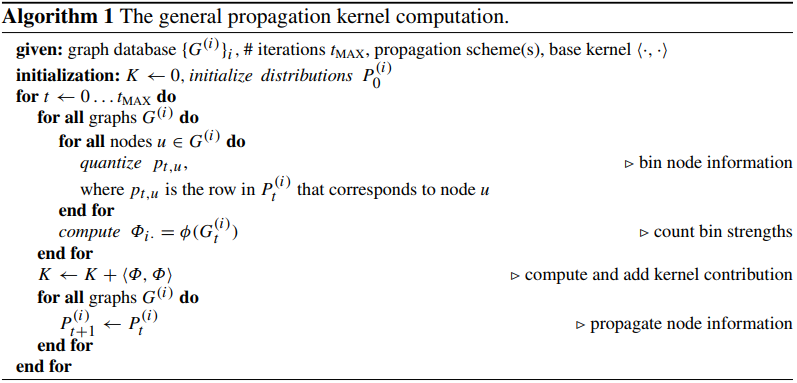
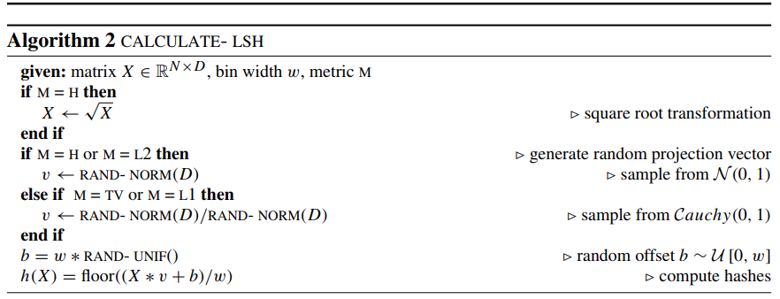
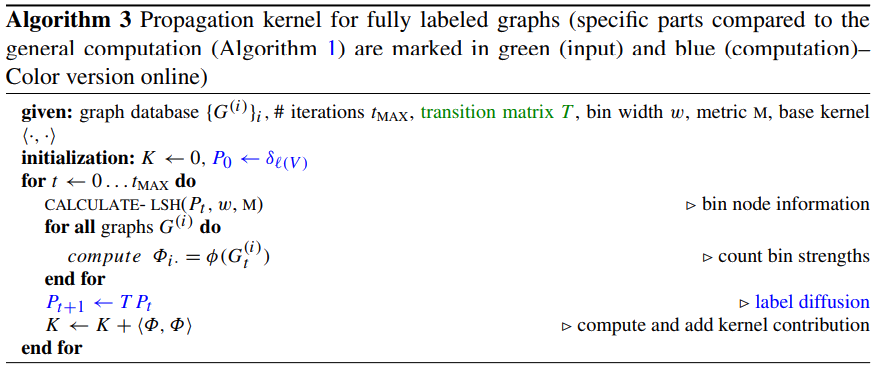

Propagation Kernel#
Propagation kernels where introduced as a general framework in [NGBK15]. They are based in the idea of propagating label information between nodes of the graph, based on the graph structure. A graph is considered to have attributes on nodes, where in the case of labels they correspond to One-Hot-Vectors of the full dictionary of labels. The totality of nodes for each graph, can be seen as a probability distribution \(P\) of size \(n \times d\) where \(n\) corresponds to the number of nodes and \(d\) to the size of attributes. After the idea of diffusion is applied in order to construct the algorithmic framework of propagation kernels. Given a transition matrix \(T\) that is row normalized, an iterative propagation scheme will be build on the basis of the following simple substitution rule:
Other than a user given transition matrix, \(T = D^{−1}A\), was considered as default for each graph, where \(D = diag(\sum_{j} A_{ij})\) and \(A\) corresponds to the adjacency matrix of this graph. The general algorithm for propagation kernels is as follows:

The general algorithmic scheme for propagation kernels.#
The kernel computation \(\langle \Phi, \Phi \rangle_{ij}\), at iteration \(t\) between two graphs \(i, j\) is equivalent with the:
where the node kernel \(k(u, v)\) is resolved through binning. In order to bin nodes a method should be found that was both efficient and expressive. A simple hashing function was considered a bad idea as it would separate values that where much more common than others. A sense of locality was needed when binning in order to group similar diffusion patterns in the same bin, similar to what is shown in the following:

A binning scheme between a two step label propagation.#
For that the technique of locally sensitive hashing [LSH] was utilized, which was applied to all the input graphs as shown in the following:

The locally sensitive function implemented inside the kernel.#
Finally the following algorithm was implemented, in our case where we consider all graphs to be fully-labeled:

The propagation kernel algorithm, which was implemented inside the package.#
In case we have an attributed graph the \(P_{0} \leftarrow \delta_{l(V)}\) is replaced by \(P_{0} \leftarrow attr(V)\) considering all the node attributes have the same dimension.
Both for attributed and for labeled graphs, implementations of the propagation can be found below:
|
The Propagation kernel for fully labeled graphs. |
|
The Propagation kernel for fully attributed graphs. |
Bibliography#
Marion Neumann, Roman Garnett, Christian Bauckhage, and Kristian Kersting. Propagation kernels: efficient graph kernels from propagated information. Machine Learning, 102:209–245, 2015.